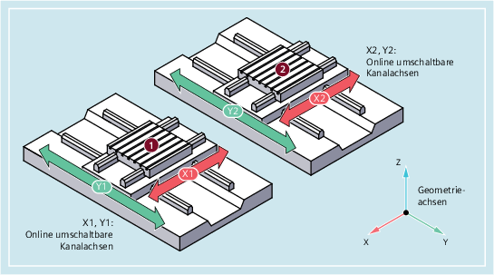
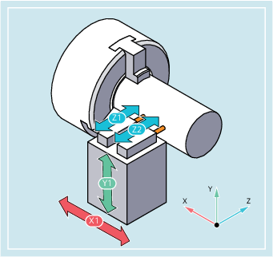

Mit der Funktion "Umschaltbare Geometrieachsen" ist es möglich, Kanalchsen des projektierten Geometrieachsverbundes aus dem Teileprogramm heraus durch andere Kanalachsen zu ersetzen. Anwendung findet die Funktion bei Maschinenkinematiken mit Parallelachsen.
Beispiel für eine Maschinenkinematik mit Parallelachsen
| Vordefinierte Prozedur zum Umschalten von Geometrieachsen | ||
| Nummer der Geometrieachse, die durch die angegebene Kanalachse ersetzt wird | ||
Wertebereich: | 0, 1, 2, 3 | ||
Wert: | 0 | Die angegebene Kanalachse wird ersatzlos aus dem Geometrieachsverbund entfernt | |
1 | 1. Geometrieachse ≙ Koordinatenachse X (Abszisse) des WKS | ||
2 | 2. Geometrieachse ≙ Koordinatenachse Y (Ordinate) des WKS | ||
3 | 3. Geometrieachse ≙ Koordinatenachse Z (Applikate) des WKS | ||
| Name der Kanalachse, die in den Geometrieachsverbund aufgenommen werden soll | ||
| GEOAX() ohne Parameterangabe aktiviert wieder die in den Maschinendaten parametrierte Grundkonfiguration der Geometrieachsen. | ||
Ein Werkzeugschlitten kann über die Kanalachsen X1, Y1, Z1, Z2 verfahren werden:
Die Geometrieachsen sind so projektiert, dass nach dem Einschalten zunächst Z1 als 3. Geometrieachse unter dem Geometrieachsnamen "Z" wirksam ist und zusammen mit X1 und Y1 den Geometrieachsverbund bildet.
Im Teileprogramm sollen nun die Achsen Z1 und Z2 wechselweise als Geometrieachse Z zum Einsatz kommen:
| Programmcode | Kommentar |
|---|---|
| ... | |
| N100 GEOAX(3,Z2) | ; Als 3. Geometrieachse (Z) fungiert Kanalachse Z2. |
| N110 G1 ... | |
| N120 GEOAX(3,Z1) | ; Als 3. Geometrieachse (Z) fungiert Kanalachse Z1. |
| ... |
Eine Maschine besitzt 6 Kanalachsen mit den Namen XX, YY, ZZ, U, V, W.
Die Grundeinstellung der Geometrieachskonfiguration über Maschinendaten ist:
Kanalachse XX = 1. Geometrieachse (X-Achse)
Kanalachse YY = 2. Geometrieachse (Y-Achse)
Kanalachse ZZ = 3. Geometrieachse (Z-Achse)
| Programmcode | Kommentar |
|---|---|
| N10 GEOAX() | ; Grundkonfiguration der Geometrieachsen ist wirksam. |
| N20 G0 X0 Y0 Z0 U0 V0 W0 | ; Alle Achsen im Eilgang auf Position 0. |
| N30 GEOAX(1,U,2,V,3,W) | ; Kanalachse U wird zur ersten (X), V zur zweiten (Y) ; und W zur dritten Geometrieachse (Z). |
| N40 GEOAX(1,XX,3,ZZ) | ; Kanalachse XX wird zur ersten (X), ZZ zur dritten; Geometrieachse (Z). Kanalachse V bleibt zweite; Geometrieachse (Y). |
| N50 G17 G2 X20 I10 F1000 | ; Vollkreis in der X/Y-Ebene. Es fahren die ; Kanalachsen XX und V. |
| N60 GEOAX(2,W) | ; Kanalachse W wird zweite Geometrieachse (Y). |
| N80 G17 G2 X20 I10 F1000 | ; Vollkreis in der X/Y-Ebene. Es fahren die ; Kanalachsen XX und W. |
| N90 GEOAX() | ; Zurücksetzen auf Grundzustand. |
| N100 GEOAX(1,U,2,V,3,W) | ; Kanalachse U wird zur ersten (X), V zur zweiten ; (Y) und W zur dritten Geometrieachse (Z). |
| N110 G1 X10 Y10 Z10 XX=25 | ; Kanalachsen U, V, W fahren jeweils auf die ; Position 10. XX als Zusatzachse fährt auf Position 25. |
| N120 GEOAX(0,V) | ; V wird aus Geometrieachsverbund herausgenommen. ; U und W sind weiterhin erste (X) und dritte ; Geometrieachse (Z). ; Die zweite Geometrieachse (Y) bleibt unbelegt. |
| N130 GEOAX(1,U,2,V,3,W) | ; Kanalachse U bleibt erste (X), V wird zur ; zweiten (Y), W bleibt dritte Geometrieachse (Z). |
| N140 GEOAX(3,V) | ; V wird zur dritten Geometrieachse (Z), wobei W ; überschrieben und damit aus dem Geometrieachsverbund ; herausgenommen wird. Die zweite Geometrieachse (Y) ; ist nach wie vor unbelegt. |
Siehe auch:
Umschaltbare Geometrieachsen (GEOAX): Weitere Informationen